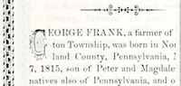

Profile of George Frank (b. 1815) from historical Adams county (Indiana) book in 1887
 Profile of George Frank (b. 1815) from historical Adams county (Indiana) book in 1887.
Citation
"George Frank," Biographical and historical record of Adams and Wells counties, Indiana. 1887 (Lewis Publishing Co. Chicago, IL), page 301, accessed on the Internet Archive at https://archive.org/stream/biographicalhistawcty01chic#page/n556/mode/1up.
Transcript of Profile [paragraphs, emphasis and lists added]
GEORGE FRANK, a farmer of Washington Township, was born in Northumberland County, Pennsylvania, November 7, 1815, son of Peter and Magdalena Frank, natives also of Pennsylvania, and of German ancestry.
When seventeen years of age [about 1832] he emigrated with his parents to Darke County Ohio, and there they resided five years. He received a rudimentary education in the district schools, and being a great reader, has become a well-informed man on the general topics of the day.
In 1838 he came to Adams County, and entered eighty acres of land in Blue Creek Township, where he settled in a log cabin and lived nineteen years [until about 1857]. He has experienced all the hardships of pioneer life. His family subsisted on wild game for their meat many years.
He subsequently removed to Washington Township.
He was married September 29, 1839, in Adams County, to Nancy Sackett, born August 14, 1823, in Greene County, Ohio, daughter of Samuel and Isabel Sackett, natives of Ohio. Her parents came to Adams County in the fall of 1837, settling in Blue Creek Township, and were among the early pioneers.
Mr. and Mrs. Frank have had seven children, three of whom survive -
- Peter,
- Samuel, and
- Elezan, wife of Joel Roe, St. Mary's Township.
Mr. Frank in an early day served as clerk of Blue Creek Township, also as justice of the peace for several years. In 1848 he was elected county assessor. At that time there were no township assessors. In 1858 he was elected sheriff; served one term and was re-elected. He was subsequently appointed to fill a vacancy in the board of county commissioners, and after his appointment expired he was elected to that office. He was serving the county when the court-house was built, and was one of its strongest advocates. It was built largely through his influence.
He owns a good farm of eighty acres on section 14, in good cultivation.
When he first came to this county he had only six dollars in cash and the clothes he wore on his back. The remainder of his possessions was done up in a 'cotton trunk."
He is a member of the Masonic fraternity at Decatur, and in politics is a Democrat.